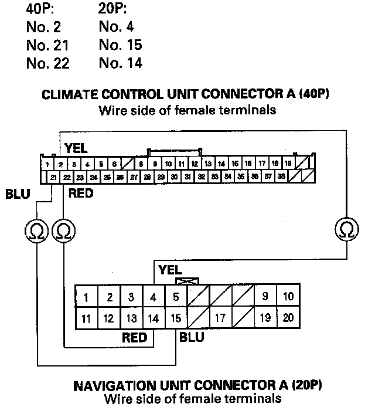
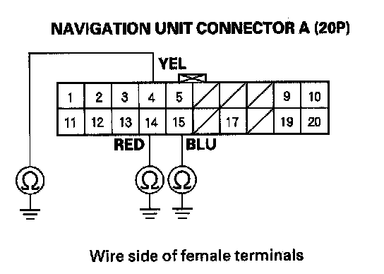
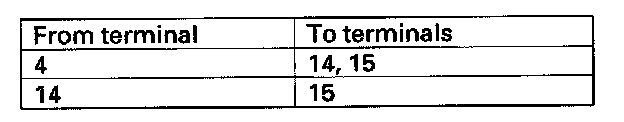

B2981
DTC B2981: Climate Control Unit Lost Communication with Navigation Unit1. Clear the DTC with the HDS.
2. Turn the ignition switch OFF and then ON (II).
3. Do the self-diagnostic with the HDS.
4. Check the DTCs.
Is DTC B2981 indicated?
YES - Go to step 5.
NO - Intermittent failure, check for loose wires or poor connections on the navigation unit and climate control unit circuit.
5. Turn the ignition switch OFF.
6. Disconnect navigation unit connector A (20P).
7. Disconnect climate control unit connector A (40P).

8. Check for continuity between the following terminals of climate control unit connector A (40P) and navigation unit connector A (20P).
Is there continuity?
YES - Go to step 9.
NO - Repair open in the wire(s) between the climate control unit and the navigation unit.

9. Check for continuity between body ground and navigation unit connector A (20P) terminals No. 4, 14, and 15 individually.
Is there continuity?
YES - Repair short to body ground in the wire(s) between the climate control unit and the navigation unit.
NO - Go to step 10.

10. Check for continuity between navigation unit connector A (20P) terminals as follows.
Is there continuity between any of the terminals?
YES - Repair the short in the wires.
NO - Substitute a known-good navigation unit, and recheck. If the symptom goes away, replace the original navigation unit. If the symptom remains, substitute a known-good climate control unit and recheck. If the symptom goes away, replace the original climate control unit.